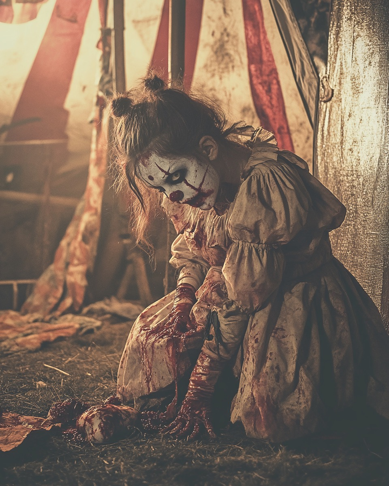

Meet the Family! (You'll Wish You Hadn't)
The circus master meets the farmer's daughter. A romance blooms around a rigged ring toss. Neither realizes they've been selected.
The Bellman family vanishes after attending the newly formed "Crimson Smile Carnival." Their station wagon is found with cotton candy stuck to the upholstery. It smells... wrong.
Three men in black suits visit the carnival outside of Searchlight, Nevada. Mordecai is seen injecting something into his neck afterwards. Family's appearances begin to... shift.
Kansas Highway Patrol reports "impossible" phenomena during confrontation. Officer Daniels' final radio transmission: "Their faces are coming off... there's something underneath..."
Complete communication blackout. Last known sighting near Chimera Lake. Military cordon established but finds nothing. Operation officially terminated Dec 13, 1968.
Papa Mordecai Barlow (The Ringleader)
Born sometime around the Great War, they say. Worked odd jobs in traveling shows – freak shows, medicine shows, anything that moved. Learned the carny trade young. Strong as an ox, quick with a hammer (or fist). Met Martha working a rigged ring toss game in '48. Said her smile was the only prize he ever truly won... though he preferred the ones he carved himself later.
He had a collection of 'lucky charms'. Teeth, mostly. Not his own.
MILITARY RECORD [PARTIAL]
SUBJECT: BARLOW, M. [REDACTED]
SERVICE: US ARMY, 1942-1945
UNIT: [REDACTED] SPECIAL OPERATIONS
NOTES: SUBJECT DEMONSTRATED UNUSUAL TOLERANCE TO [REDACTED] DURING OP. STILLWATER. RECOMMENDED FOR CHIMERA PHASE 1 TRIALS BY DR. [REDACTED]. PSYCHOMETRIC EVALUATIONS SHOW SADISTIC TENDENCIES WITHIN ACCEPTABLE PARAMETERS.
STATUS: HONORABLY DISCHARGED 1945. MARKED FOR CIVILIAN MONITORING.
Mama Martha Barlow (The Matriarch of Malice)
A farmer's daughter who ran away to join the circus. Sweet on the surface, but there was always something... brittle underneath. Excellent seamstress – patched up costumes and, occasionally, other things. Her pies were famous on the circuit, though some ingredients weren't listed on any recipe card. Started wearing the clown makeup full-time around '61. Said it "kept the real face safe."
She hummed lullabies while cleaning bloodstains. Found it soothing.
RECIPE CARD [STAINED]
Mama's Special Meat Pies
Ingredients:
- 2 cups flour
- 1 tsp salt
- 2/3 cup shortening
- 5-7 tbsp cold water
- 2 lbs fresh meat (get from special cooler)
- Herbs to taste
A family favorite!
Several customers reported metallic taste. Ringmaster Jenkins disappeared two days before the fair. Connected?
Lilybeth Barlow(Daddy's Little Nightmare)
The elder child, born '52. Quiet, watchful. Loved dolls, especially ones that looked disturbingly realistic. Developed a fascination with anatomy early on, helped Pa Barlow with 'show prep'. Her clown persona, "Giggles," was known for a high-pitched laugh that often coincided with someone backstage having an 'accident'. Listen closely, maybe you can still hear it...

SCHOOL RECORD FRAGMENT
Student: Lilybeth BarlowGrade: 3 (attended sporadically)Notes from teacher (Miss Winters):
Lilybeth is a quiet child with troubling tendencies. Her drawings aredisturbing - human figures with their insides exposed. When questioned, she explained in alarming detail what each organ was. School pets disappeared whenever the carnival was in town. I've contacted the authorities regarding my concerns, but the family moved on before any investigation. The other children are afraid of her laugh.
Miss Winters resigned shortly afterward.Her replacement found a small doll resemblingMiss Winters in Lilybeth's desk- with pins in its eyes.
Junior Barlow (Mama's Boy)
Born '55. Less outwardly aggressive than Lilybeth, more... unsettlingly vacant. Mimicked his parents' movements. Obsessed with ropes, knots, and how things held together (or came apart). His clown act involved elaborate, often dangerous-looking, escape artistry. Sometimes, the volunteers didn't quite 'escape'. He just smiled his painted smile.
MEDICAL EXAMINATION [1966]
PATIENT: BARLOW, J.
AGE: 11 (APPEARS PHYSIOLOGICALLY 15-17)
WEIGHT: 140 LBS
TEMP: 95.2°F (BELOW NORMAL)
NOTES: SUBJECT DISPLAYS UNUSUAL JOINT FLEXIBILITY. SKIN ELASTICITY BEYOND NORMAL PARAMETERS. BLOOD WORK REVEALS [REDACTED] ANOMALIES CONSISTENT WITH GAMMA-7 EXPRESSION. PUPILLARY RESPONSE ABNORMAL - POSSIBLE SECONDARY EYELID?
RECOMMENDATIONS: CONTINUE MONITORING. INCREASE SERUM DOSAGE 15%. CONTAINMENT PROTOCOL BETA IF CHANGES ACCELERATE.
Mama's Diary - Fragments Recovered
Found tucked inside a hollowed-out Bible. Pages stained and brittle.
June 10, 1961
Mordecai came back late. Smelled of cheap whiskey and something coppery. Said he 'disciplined' that roustabout who looked at me funny. Roustabout ain't showed up for work today. Mordecai just polished his hammer. Painted a new, wider smile on his mask tonight. Said it felt right. Kids slept soundly. Good kids.
September 3, 1963
Lilybeth brought me a 'present'. A bird, but its wings were put on backwards. She giggled and said it looked prettier that way. Such imagination! Junior spent all afternoon tying knots in Pa's rope. Tied one around the stray cat's neck. Said he was 'practicing for the big show'. Had to remind him not to practice on things we might need later. Mordecai watched them both. He was so proud. His real smile, the one under the paint, showed for a second. It's all teeth.
July 18, 1965 - [REDACTED] Town, Somewhere West
Left last town quick. Sheriff asked too many questions about the missing couple near the edge of the woods. Said they just 'moved on'. People move on all the time. We help them sometimes. Mordecai says the road calls. Says the paint needs fresh coats. Says the smiles need to be BRIGHTER. REDDER. He keeps talking about the special project... the one the man in the black car mentioned back in Nevada... makes him jittery. Makes his laugh sound like rocks grinding.
What project? What man?
The name "Project Chimera" is scrawled faintly in the margin here, then violently crossed out.
October 31, 1967 - Hiding
It's happening faster now. My skin feels too tight. The children's eyes change when they think I'm not looking. Something moves under Junior's face. The men in suits found us again yesterday. Brought more of the blue serum. Mordecai took three doses. Said we needed to be "ready for the final phase." His arms are longer today. I caught Lilybeth staring at her reflection, pulling at her cheeks like they might come off.
I'm scared. Not of what we've done. Of what we're becoming.
they're inside us now. they speak through our mouths sometimes.
This is not Martha's handwriting. The letters are jagged, almost inhuman. At the bottom of the page is a crude drawing of a human face being peeled away to reveal something with too many eyes.
Look for "remnants.html" - Some pages were never meant to be found. The truth lies in code.